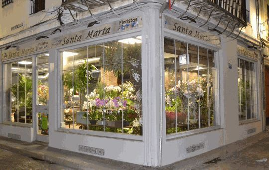

Personas comprometidas con el cliente
«Cada cliente es importante y único.» Esa es la idea con la que empezamos y la que seguimos hoy.
Santa Marta Floristas fue fundada hace más de 70 años por Juan José Prieto Iglesias y su hijo Rafael, en la calle Jesús María de Córdoba. Con los años la tienda se trasladó a la calle Osario, 20, donde continúa hoy de la mano de Gloria, hija de Rafael.
Somos una floristería que destaca por su conocimiento del arte floral, la venta de flor de calidad y el mejor servicio.
Tres generaciones
-
Juan José
Funda la floristería en la calle Jesús María, en pleno centro de Córdoba.
-
Rafael
Continúa el oficio junto a su padre. Con los años, la tienda se traslada a la calle Osario, 20.
-
Gloria
Hija de Rafael, está hoy al frente de la tienda, del taller y de cada encargo.

Cómo trabajamos
Lo mismo que el primer día: buena flor, buen consejo y cuidado en cada detalle.
- Flor seleccionada de España, Holanda y Colombia
- Cada ramo se monta a mano en nuestro taller
- Te aconsejamos según la ocasión y el presupuesto
- Reparto propio en Córdoba y envíos con Interflora
Confían en nosotros
- Cabildo Catedral de Córdoba
- Universidad de Córdoba
- Universidad Loyola
- EMACSA
- FEPAMIC
- Hotel Palacio del Bailío
- Hotel Córdoba Center
Ven a vernos
Calle Osario, 20 · 14001 Córdoba